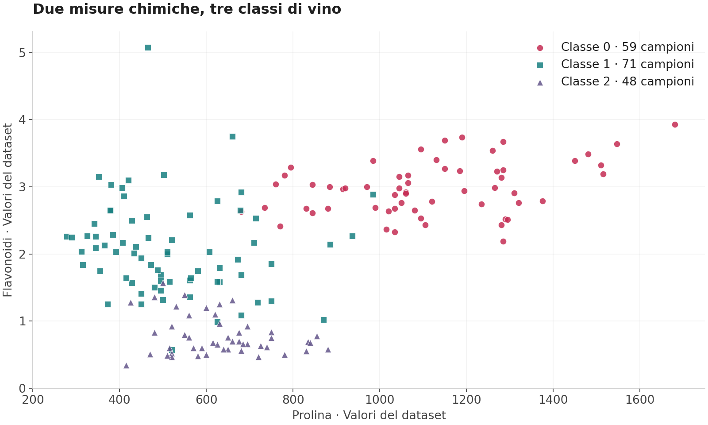
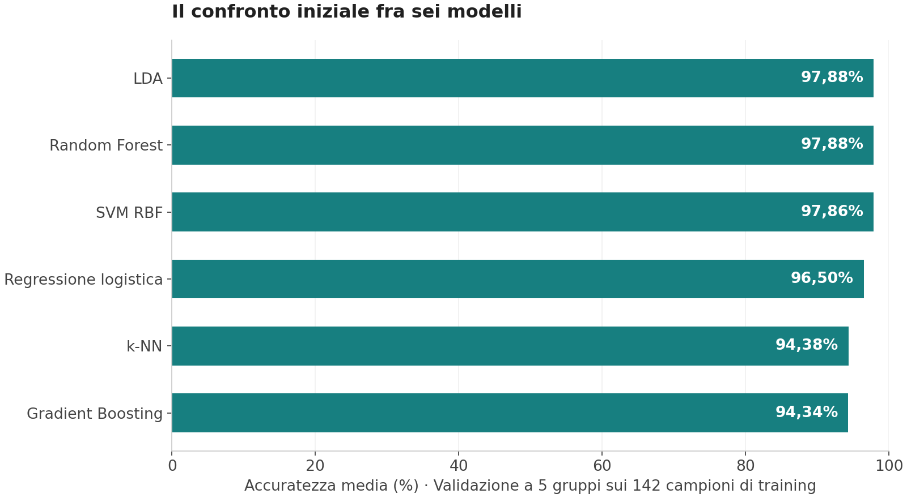
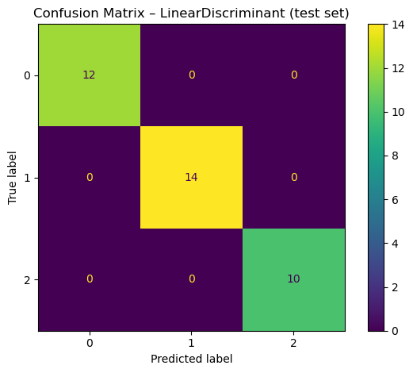

Classificare i vini attraverso i dati chimici
Ho confrontato sei modelli di machine learning per riconoscere tre classi di vino a partire da 13 misure chimiche. È un progetto didattico su dati pubblici: dalla lettura del dataset alla preparazione dei modelli, fino al confronto dei risultati e delle variabili che contribuiscono alle classificazioni.
Che cosa deve riconoscere il modello
Ho utilizzato Wine, un dataset dell'archivio UCI disponibile anche in scikit-learn. Raccoglie 178 campioni di vini prodotti nella stessa regione italiana e derivati da tre diverse varietà di vite. Le classi indicano queste varietà, non un voto alla qualità del vino.
Ogni campione è descritto da 13 misure, tra cui alcol, acido malico, flavonoidi, intensità del colore e prolina. Il compito del modello è usare questi valori per assegnare il campione alla classe corretta.
Conoscere i dati prima di addestrare
Ho controllato valori mancanti, duplicati, distribuzione delle classi e relazioni tra le variabili. Il dataset è completo e non contiene righe duplicate. Le tre classi, numerate da 0 a 2 nel notebook, comprendono rispettivamente 59, 71 e 48 campioni.

Grafico ricostruito dal dataset Wine. Ogni punto rappresenta un campione; colori e simboli distinguono le classi. Sono mostrate due delle 13 variabili utilizzate dai modelli.
Già osservando prolina e flavonoidi emergono differenze tra i gruppi, insieme ad alcune sovrapposizioni. Nel notebook ho esaminato tutte le variabili e le loro correlazioni, per capire quali informazioni stavo fornendo ai modelli.
Ho considerato anche i valori estremi e confrontato una versione dei dati che li escludeva. Nel lavoro successivo ho mantenuto il campione completo, affiancando due metodi per riportare le variabili su scale confrontabili: StandardScaler e RobustScaler.
Un confronto fra sei modelli
Ho suddiviso i dati in 142 campioni per sviluppare i modelli e 36 per le verifiche, mantenendo le proporzioni delle tre classi. Sui primi 142 ho confrontato regressione logistica, LDA, k-NN, SVM, Random Forest e Gradient Boosting.
Per il confronto iniziale ho usato una validazione a cinque gruppi: a turno, quattro servono per addestrare e uno per valutare. La trasformazione delle variabili è inserita nella stessa procedura del modello e viene calcolata sui dati usati per addestrarlo in ciascuna prova.

Grafico ricostruito dai risultati salvati nel notebook: validazione a cinque gruppi con StandardScaler. Le percentuali indicano la quota media di classificazioni corrette, non prestazioni misurate su nuovi dati esterni.
LDA, Random Forest e SVM ottengono risultati molto vicini, intorno al 97,9%. Una differenza di pochi centesimi di punto non basta per dichiarare un vincitore. Ho approfondito LDA e Random Forest, confrontando diverse impostazioni e osservando anche quanto variassero i risultati tra le prove.
Leggere il risultato sui 36 campioni

Immagine originale del notebook. Le righe indicano le classi reali, le colonne quelle previste. I valori sulla diagonale contano le classificazioni corrette; quelli fuori dalla diagonale contano gli errori.
Nella verifica riportata, LDA classifica correttamente tutti i 36 campioni tenuti fuori dall'addestramento. Anche le configurazioni di Random Forest esaminate nel notebook ottengono 36 risposte corrette su 36.
È un risultato riferito a un campione piccolo. Inoltre, durante il lavoro ho consultato più volte lo stesso insieme di verifica, confrontando diverse configurazioni: va quindi letto come valutazione interna. Per misurare le prestazioni su nuovi vini servirebbero campioni raccolti separatamente e mai utilizzati nelle scelte del modello.
Quali variabili contribuiscono alle classificazioni
Con Random Forest ho esaminato anche l'importanza assegnata alle variabili. Nel modello analizzato, prolina, flavonoidi e intensità del colore occupano i primi tre posti. Questa lettura aiuta a capire quali misure il modello usa maggiormente per distinguere le classi, senza attribuire loro un significato causale o un giudizio sulla qualità del prodotto.
Il progetto mi ha permesso di seguire l'intero lavoro su un problema di classificazione: esplorare i dati, preparare un confronto riproducibile, regolare i modelli e interpretare risultati e limiti della valutazione.
Strumenti utilizzati: Python, pandas, NumPy, scikit-learn, Matplotlib e Seaborn.
Dati e riferimenti
- Wine nell'archivio UCI: dataset di S. Aeberhard e M. Forina, distribuito con licenza CC BY 4.0.
- Wine in scikit-learn: documentazione del dataset usato nel notebook.